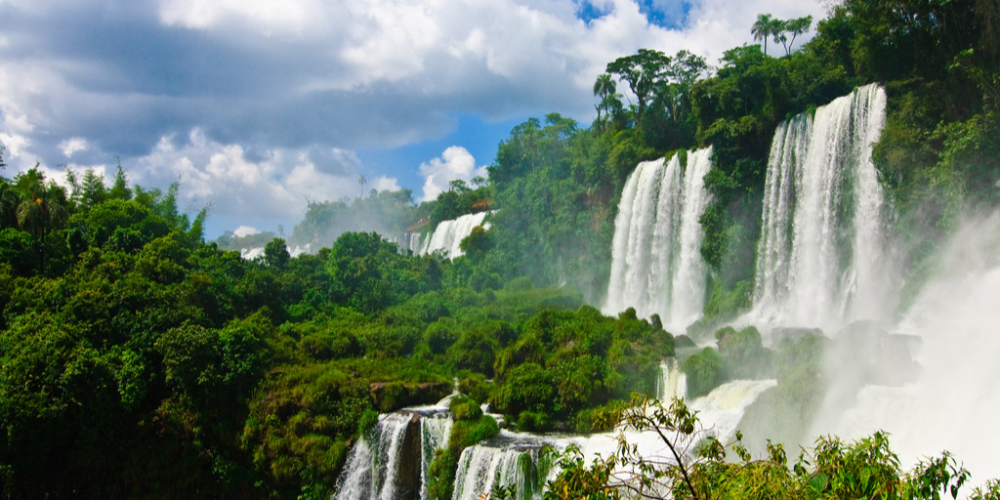
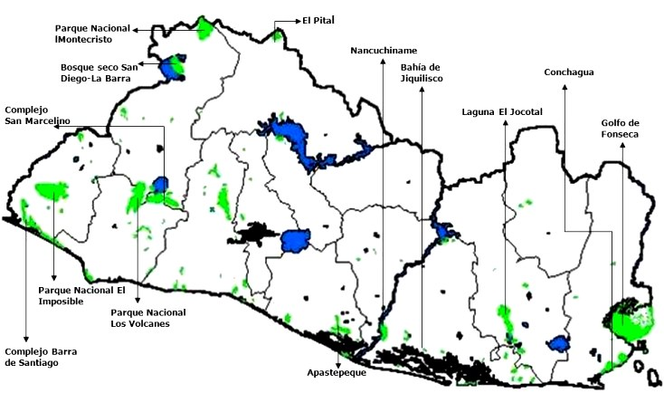

El Salvador es un país que se encuentra en la zona de América Central, es un país con un clima tropical, es decir, es cálido. Por tal razón, ofrece mucha abundancia en la vegetación y existen diferentes hábitats en zonas del país.
En el Ecosistema pueden encontrase con una variedad de ambientes, desde bosques hasta zonas
muy aridas, existentes mayormente en zonas fronterizas del oriente del pais.
Hay lugares que le toman mucha importancia a la preservacion de la vegetacion, uno de ellos es el
Jardin Botanico "La Laguna", ubicado en el plan de la laguna, antiguo Cuscatlan.
El lugar conciste en un area protegida para la preservacion de varias especies de plantas,
es conocido como el pulmon del pais.
Quizás la más importante de las razones para cuidar el medio ambiente, es que hacemos vida en él. Siendo la tierra nuestro hogar, es responsabilidad nuestra el daño que le hemos causado, así como repararlo. Los asentamientos urbanos se han incrementado a un ritmo nunca antes visto en la historia de la humanidad, lo cual, lógicamente, ha significado una destrucción acelerada de ecosistemas naturales. Es por eso que deben buscarse soluciones para reparar esta destrucción e intentar restaurar el equilibrio medio ambiental.
La vida en la tierra es muy frágil, los más pequeños cambios pueden causar estragos en el medio ambiente. Si problemas como la contaminación o la deforestación no son resueltos, la vida en la tierra podría no ser sustentable. La polución es un buen ejemplo de cómo el ser humano afecta su propia vida en la tierra, la liberación de elementos tóxicos en la atmósfera puede llevar a condiciones donde el ser humano no sobreviviría (catástrofes naturales o contaminación extrema del aire).
La población mundial ha crecido aceleradamente desde el siglo XX, esto significa que no sólo necesitamos más espacio para vivir, sino para la producción de más elementos para nuestro sustento.
Varios estudios indican que la destrucción del medio ambiente en una época con un crecimiento poblacional tan alto, podría generar un déficit de elementos naturales (animales, plantas) necesarios para la vida humana.
Con sobrepoblación, los recursos podrían acabarse dando paso a una hambruna sin precedentes en la historia del planeta.
La contaminación y destrucción de hábitats, ha generado la extinción de muchas plantas y animales. Actualmente cientos de especies se encuentran en peligro de desaparecer, principalmente debido a afectos del ser humano. Perder la biodiversidad implica romper con ciclos naturales muy delicados y vitales para la vida, como la polinización. Además las cadenas alimentarias perderían su equilibrio, causando sobrepoblación de especies que podrían ser perjudiciales para el hombre. A nivel cultural, la extinción de una especie animal o vegetal indica decadencia en la conservación de la vida.
Es muy importante el saber que áreas se encuentran protegidas en El Salvador, ya que estas áreas son de suma importancia para la ecología del país y para el mundo, ya que forma parte de una ley el de mantener la flora y fauna en un territorio, además de evitar que esta llegue a extinguirse de manera muy rápida.
Imagen de las zonas protegidas de EL Salvador.

Telefono: +503 1592-4545
Dirrecion: 7895 Kelvin Harbor City Pierceton
E-mail: elsalvador@gmail.com
En nuestro formulario puedes escribirnos tus inquietudes acerca de lo bien que te parecio el contido que se presento en esta pagina, puedes dejar tus sujericias en cuanto a la calidad del contenido y tambien si debemos mejorar en algo que tu creas conveniente. asi adactamos nuestro servicio para traerles contenido de buena calidad.
No tendremos una sociedad de la que estar orgullosos si destruimos el medio ambiente.